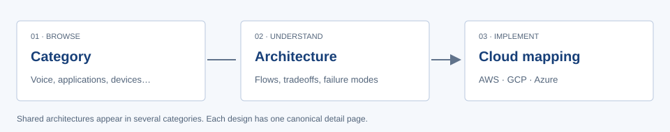

Conversational AI →
Systems activated by a person speaking or typing.
Browse 6 architecturesUnderstand the architecture, follow the flow, and map the building blocks to AWS, Google Cloud, or Azure.
Explore conversations, voice assistants, web and desktop applications, device intelligence, and AI that works behind the scenes.

Categories overlap. A design can support several experiences and environments.
Systems activated by a person speaking or typing.
Browse 6 architecturesSpeech pipelines, realtime conversations, and smart speakers.
Browse 4 architecturesIntelligence embedded in browsers, business software, and desktop tools.
Browse 17 architecturesInference on phones, local machines, and physical devices.
Browse 6 architecturesPredictions and processing without an active conversation.
Browse 12 architecturesHow models, tools, queues, and people coordinate work.
Browse 11 architecturesA bounded prediction or generation behind an application interface.
Ground a generated answer in a maintained collection of evidence.
Run the model near the data without a required cloud round trip.